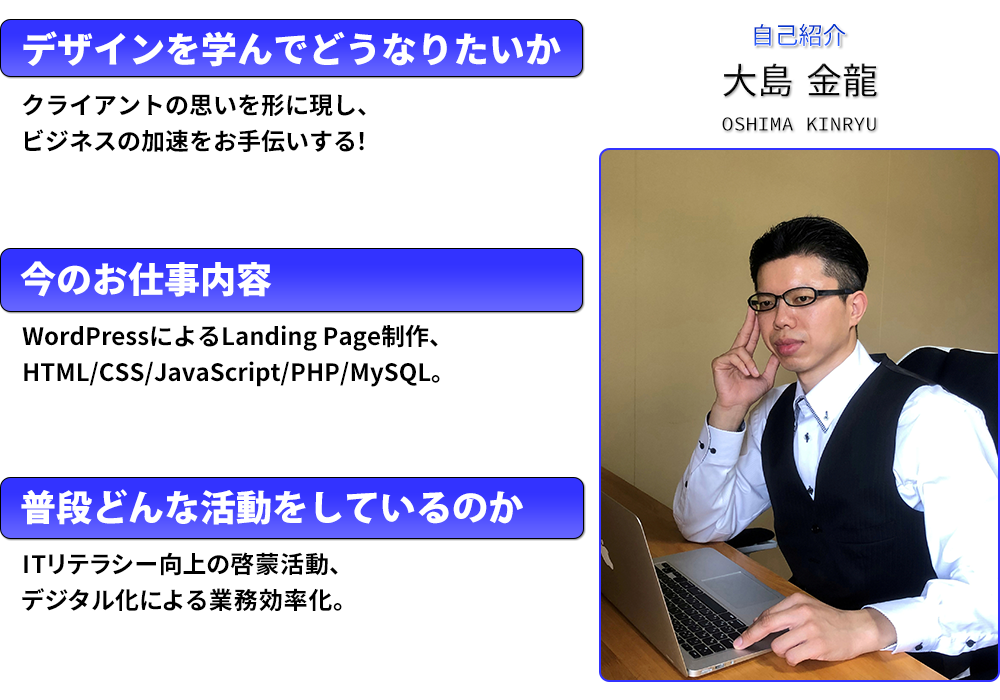

ABOUT
生年月日：1983年06月19日
出身地：青島市→大分市→上海市→福岡市
血液型：AO型
身長：174cm
最終学歴：上海師範大学院
職業：ITコンサルタント、WEB戦略アドバイザ、
デザインエンジニア、コンテンツプロデューサ
経歴：
2007年-2008年 (株)ジャパンウェブサービス 技術部所属
2010年-2019年 上海青橋文化伝播有限公司 情報部所属
2020年-2023年 (株)三井商船ロジスティクス 倉庫部所属
